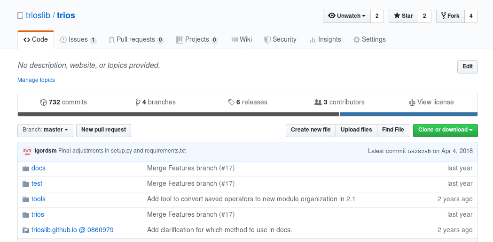
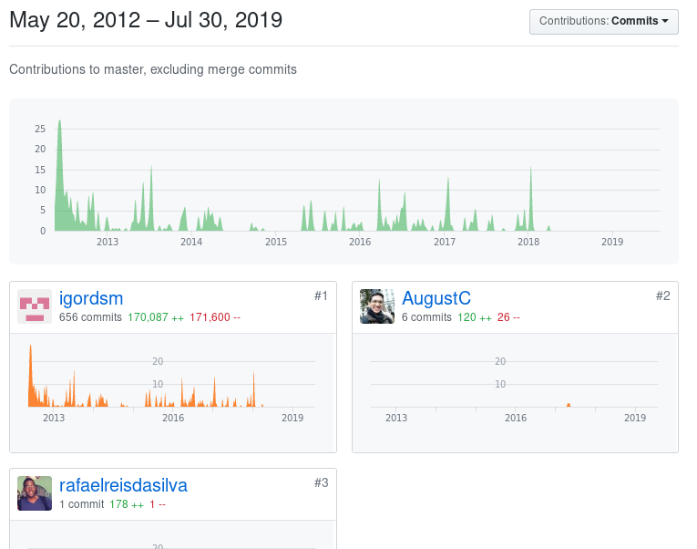
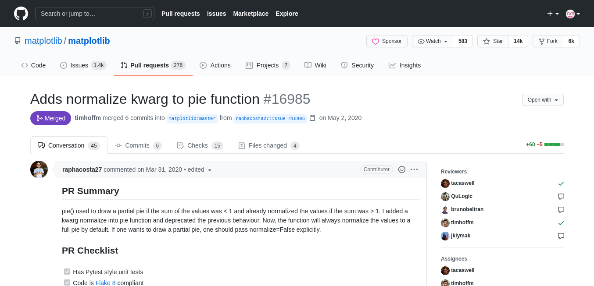
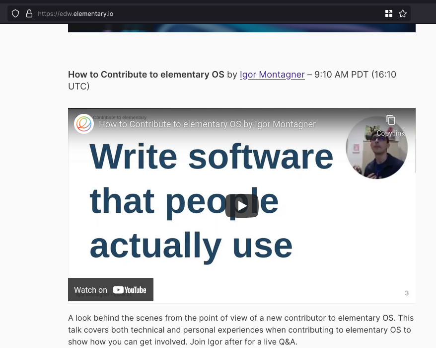
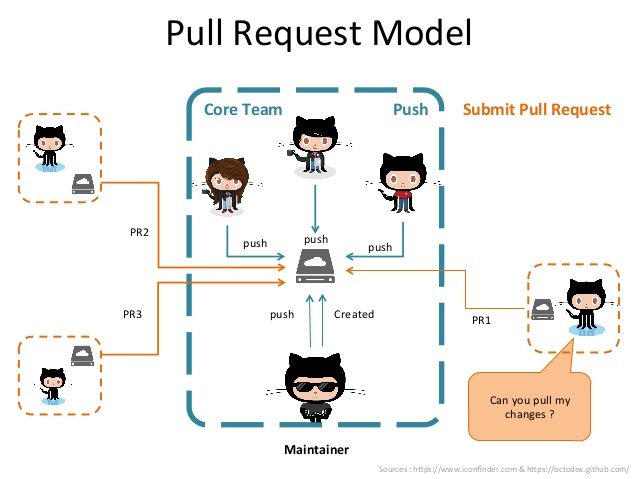

Desenvolvimento Aberto

Apresentação da Disciplina + Workflow de trabalho distribuído
Igor dos Santos Montagner ( igorsm1@insper.edu.br )
Burocracias
Horários de aula:
- TER 18:00 - 20:00
- QUI 18:00 - 20:00
Atendimento:
- SEX 09:00 - 10:30
Avaliação
- Curso baseado em projetos feitos individualmente e/ou com apoio de um grupo.
Objetivos de Aprendizagem
Ao final da disciplina o estudante será capaz de:
- Analisar uma base de códigos desconhecida de médio/grande porte e modificá-la de modo a fazer melhorias e corrigir falhas em um software;
- Interagir com uma equipe remota de desenvolvedores para entregar código que atenda aos padrões de qualidade e estilo de código de um projeto;
- Entender as diferenças licenças de software livre e como elas impactam na distribuição e reutilização de uma base de código.
Objetivos (versão resumida)
Ao final da disciplina o estudante será capaz de:
- Baixar, entender e modificar o código de um projeto
- Conseguir que suas modificações sejam aceitas pelo projeto original
- Compreender aspectos ligados a distribuição de software.
- Licenças
- Bug Tracker, Versionamento, Governança, etc
- Documentação / Internacionalização
- Comunidades de usuários
Programa do curso
- Modelos de desenvolvimento e comercialização de software;
- Licenças de software e seu impacto na reutilização e distribuição;
- Ferramentas de apoio ao desenvolvimento colaborativo de software (livre ou proprietário);
- Documentação de software e de código;
- Tradução e internacionalização de Software
- Sistemas de compilação e distribuição de código fonte;
- Aspectos humanos e comunitários em desenvolvimento de software;
- Estudo de casos de sucesso.
Livro texto

Disponível online em https://producingoss.com
Materiais do curso
Github: https://github.com/insper/dev-aberto
Site: https://insper.github.io/dev-aberto/

Blackboard será usado para avisos somente. Todo conteúdo estará disponível no github.
Justificativa da disciplina
Nas disciplinas anteriores trabalhamos
- criando um projeto novo.
- que normalmente morre após a disciplina
- e nunca é usado por ninguém
No mercado, normalmente trabalhamos em um projeto existente
- corrigindo problemas
- realizando melhorias
- que é usado por vários usuários
Por que vocês estão aqui?
https://forms.office.com/r/qzH223URmA
Minha motivação (Igor)
Por que a disciplina foi criada (por mim)?
Minha motivação (Igor)

Minha motivação (Igor)

Minha motivação (Igor)
- Trabalhei sozinho durante 5 anos
- Gastei dezenas de horas escrevendo
- um artigo científico sobre esta implementação.
- documentação para usuários e desenvolvedores
- Eu obtive benefícios ao desenvolver esse projeto
- É possível que eu tenha resolvido um problema que nunca ninguém teve!
Minha motivação (Igor)
Não basta mais criar software por diversão/aprendizado
Quero ter impacto
- Criar/contribuir com software que alguém use
- Escrever textos que alguém leia
- Participar de comunidades que sentiriam falta de mim se eu as abandonasse
Quais são os resultados disso?
Vitória - 2018/2
Spyder
- Aceito: [1]
Pandas
- Aceito: [1]

Paulo - 2018/2
Cataclysm: DDA

- Aceito: [1]
Turma - 2019/2
15 estudantes
19 projetos diferentes, 14 PRs aceitos
Pandas - 6 contribuições aceitas

Turma 2020/1
16 estudantes
15 projetos diferentes, 17 PRs aceitos
Pandas, Matplotlib, Bokeh, Pygame

Minhas contribuições

~20 PRs aceitos
Participação como palestrante em evento
Minhas contribuições

Apresentação do curso
Apresentação do curso
Proposta: Curso será gamificado
- Cada aluno criará um avatar na disciplina
- Atividades para entrega valem XP
- Cada atividade é representada por uma skill com um nome engraçadinho.
- Toda entrega de trabalho é via Pull Request no repositório da disciplina.
- Grande liberdade de escolha
Apresentação do curso (Skills)
- Tutorial: atividades preparatórias (guiadas) em sala de aula
- Código: contribuições de código para projetos externos
- Comunidade: contribuições não técnicas que podem beneficiar usuários e desenvolvedores de um projeto, como documentações e traduções
- Impacto: resultados significativos alcançados pela participação do aluno em projetos abertos
Lista completa de skills
Apresentação do curso (plano de aulas)
- Agosto/Setembro: Tutorial
- 30-60 minutos de expositiva/discussões
- Atividades focadas em um tema específico
- Outubro/Novembro: Projeto
- Autonomia para definir quais tarefas serão feitas
- Escolha de projetos será semi-livre
Apresentação do curso (avaliação)
- Todas as entregas são individuais
- Cada objetivo de aprendizagem é medido por várias skills.
- Algumas são obrigatórias
- Repetir uma skill pode valer mais ou menos pontos que a primeira vez.
- Nota é baseada na quantidade de XP obtida.
- Liberdade para decidir onde investir tempo/esforço.
Apresentação do curso (avaliação)
- Nota final é uma combinação de XP e skills obtidas
- Relatório quinzenal enviado por email
- Condições completas na página de regras e skills
Discussão: workflow de desenvolvimento
Como Git funciona?

Fonte: https://www.slideshare.net/abderrahmanebenbachir/continuous-integration-in-github

Fonte: https://www.slideshare.net/abderrahmanebenbachir/continuous-integration-in-github
Atividade: Primeiros passos
Objetivo: Enviar seu primeiro Pull Request para o repositório da disciplina.